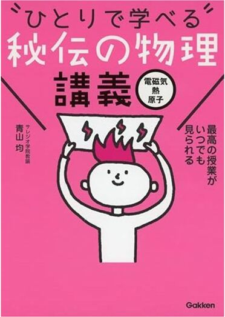

読んでいただき、ありがとうございます。
この度、筑波大学情報学群情報科学類の一般入試(前期日程)に合格しました。
合格体験記を執筆するにあたり、特に再現性の高い「参考書の使い方」 を主軸にお伝えしたいと思います。
私は予備校に通っておらず、参考書学習をメインで受験勉強を行なっていました。
また私は過年度生であったため、共通テストでは経過措置（旧課程での受験）を利用していました。そのため、2025年受験の現役生/来年以降の受験生とは若干学習内容が異なる点があることを、あらかじめご了承ください。
目次
受験科目と教科ごとの点数
共通テスト
国語(現古漢) 178/200
旧数学Ⅰ・旧数学A 89/100
旧数学Ⅱ・旧数学B 93/100
物理(旧課程) 74/100
化学(旧課程) 70/100
英語リーディング 160/160
英語リスニング 33.2/40
旧倫理、政治・経済 66/100
情報Ⅰ 98.25/100
共通テスト合計 861.45/1000
2次試験[得点開示が来たら追記予定]
数学 700点
理科(物理、化学) 500点
英語 400点
2次試験合計 1600点
総合点 2600点(共通テスト比率38.5%)
共通テストについては、英語リーディングを1.6倍、英語リスニングを0.4倍、情報Ⅰを 75+(獲得点数)×0.25 として計算することに注意が必要です。 (また、情報Ⅰの点数補正は来年以降も段階的に変更するようです。)
2次試験については、数学の配点がとても高いです。2次数学の出来が合否に最も大きく影響すると思います。
国語
使用した参考書
センター試験/共通テスト過去問 2009-2024(16年分)
2025共通テスト総合問題集 国語
2025-大学入学共通テスト実戦問題集 国語
Z会 現代文キーワード読解
現代文 読解の基礎講義
読んで見て覚える 重要古文単語315
ステップアップノート３０ 古典文法基礎ドリル
はじめの一歩 古文読解問題集
漢文早覚え速答法 共通テスト対応版
難関大突破 新漢文問題集
Z会 現代文キーワード読解

現代文単語帳です。評論文/小説に頻出の単語の説明が網羅されています。
語彙力に不安がある人は、やると不安が払拭されると思います。自信がある人も、確認として1冊手元にあってもいいと思います。
1周目で知らない単語を付箋を貼ってリストアップして、その部分だけ何回か周回しました。
現代文 読解の基礎講義
有名予備校講師の中野芳樹さんという方が執筆された本です。主に、実践演習を通しながら現代文文章の「読み方」を訓練する本です。
「どのような表現が出てきた時に、どのようなことを考える/メモの仕方をすべきか」のようなことが詳しく説明されています。
個人的な意見ですが、この本に書かれたやり方を参考にしつつも、それをマイナーチェンジして自分なりに納得のいくやり方を身につけるのが最も良いと思います。
私はそのようにすることで、評論文2ミス、小説0ミス、実用文0ミスまで上げることができました。
読んで見て覚える 重要古文単語315

古文読解において特に重要な315語の意味と説明が書いてある本です。
英単語帳と同様に、隙間時間(電車内など)でコツコツ頭に入れていました。
多分、(適当に見ていたものも含めれば)50周くらいしたと思います。(英単語帳より圧倒的に収録単語数が少ないため、高速で周回できます)
本来であればこの315語は全て完璧にマスターしておくべきですが、本番までにそれができていたかは正直微妙でした。
巻末に古文常識等が書いてありましたが、あまり積極的取り組んではいませんでした。むしろ、問題演習をしてまだ知らない古文常識や古文用語が出て初めて参照するという形でやっていました。
また、単語の近くにイラストが描いてあるのですが、そのイラスト自体が単語のヒントになってしまうため、全て修正テープか何かで消しました。
ステップアップノート３０ 古典文法基礎ドリル
多分1番有名な古文文法問題種集だと思います。
3~4周くらいしました。
ですが、正直助動詞等の意味を全てちゃんと把握していたかというと、完璧にはしていなかった気がします。 むしろ、各助動詞の雰囲気みたいなものを文章読解を通して漠然と把握しておいて、なんとなくで読解していた感じがします。(普通にあまりいい取り組み方ではない気もします)
時間があれば、5周以上してちゃんと覚えておくのがいいと思います。(しかし理系はあまり古文に割ける時間は多くないと思います)
はじめの一歩 古文読解問題集
読解問題集です。30題あって、入門~基礎レベルです。2周しました。
取り組んだ後に何度も音読していました。そうすることで古文単語や助動詞などの「ふわっとした雰囲気」のようなものが段々頭に入ってきて、読解力向上につながったと思います。
本当はこの後もう1冊標準レベルの読解問題集をやる予定だったのですが、時間がなくてできませんでした。
しかし基礎レベルまでしか取り組んでいなくてもなんとか満点が取れたので、理系の場合は最悪「基礎レベルの読解問題集+過去問」でもいい気がします。(あまり古文にたくさん時間を使うわけにもいかないと思います)
漢文早覚え速答法 共通テスト対応版
主に句形と重要漢字を学ぶための参考書です。10周弱くらいしました。
この参考書だけで共通テスト漢文の全ての事項をカバーできるかというと、正直微妙だと思います。
まず、頻度はあまり高くないですが、この本で習っていない句形は出ます。また、巻末の方に重要漢字が載っていますが、そこにない漢字もゴロゴロ出ます。
私は、この本に載っていない句形は仕方ないと割り切って捨てていました。 漢字に関しては、「その漢字を含む二字熟語を考え、その二字熟語の意味から漢字の意味を推測する」といった方法である程度対応できると思います。
また、意外とこの本に載っている典型的な句形は文章中での出現頻度がとても高くないと思っています。
勿論、句形を正確に把握しておく必要があるのですが、それと同等かそれ以上に、 「文章全体として何が言いたいのか」「今説明されている人物は模範像として描かれているのか、反面教師として描かれているのか」 のようなことを考えながら読むことが点数向上につながると思うので、「漢文早覚え速答法だけマスターしておけば、漢文はどうにかなりそう」のような考えは間違いである可能性があります。
難関大突破 新漢文問題集
標準レベルの読解問題集です。15題あります。1周しました。
筑波理系は2次試験に国語がないため、共通テストの形式っぽくない問題は飛ばしたりしていました。
また、古文同様、取り組んだ後は何回か音読していました。
数学
使用した参考書
筑波過去問 2019~2024(6年分)
センター試験/共通テスト過去問 2020-2025(6年分)
2024共通テスト総合問題集 数学1A
2024-大学入学共通テスト実戦問題集 数学1A
2024共通テスト総合問題集 数学2B
2024-大学入学共通テスト実戦問題集 数学2B
入試数学の基礎徹底 2024年03月号 (大学への数学)
数学IIIの入試基礎 講義と演習 (大学への数学)
1対1対応の演習/数学Ｉ (大学への数学)
1対1対応の演習/数学A (大学への数学)
1対1対応の演習/数学Ⅱ (大学への数学)
1対1対応の演習/数学B (大学への数学)
1対1対応の演習/数学Ⅲ(微積分編) (大学への数学)
1対1対応の演習/数学Ⅲ(曲線・複素数編) (大学への数学)
理系数学の良問プラチカ 数学I・A・II・B
理系数学の良問プラチカ 数学Ⅲ
合格る計算 数学Ⅲ
入試数学の基礎徹底 2024年03月号(大学への数学)

基礎レベルの問題集です。各単元ごとに章分けされていて、章の初めにその単元についての詳しい説明が書いてあります。
特に公式の意味や導出、やや発展的な内容まで書かれているため(例えば正射影ベクトルなど)、章の初めの説明部分は全て理解して使えるようにしました。
収録問題数はそこそこ多いですが、全て基礎レベルなので、時間をかけずに解き切ることができました。
私は春にやりました。一番遅くとも春までに終わらせておくといいと思います。
数学Ⅲの入試基礎 講義と演習 (大学への数学)
≈先ほどの問題集の数学Ⅲ版です。やり方は先ほどのものと同じです。
1対1対応の演習/数学Ｉ (大学への数学)
言わずと知れた名著だと思います。
レベルは標準レベルで、入試数学の基礎徹底が公式のインプットだとすると、1対1は解法のインプットだと思います。
上の写真のように、自分の中での解放の解釈や解放を選んだ理由、解放の使い分け方法といったことを紙に書いて、それを貼って参照しやすくしていました。
数学の勉強の中で一番多くの時間を費やしたのがこの1対1でした。合計4~5周ほどしました。
数学の問題集を3周以上行うことには賛否両論あるということは認識していますが、「2024年までの筑波数学は難関大の中では典型度が高い問題が多い」ことと、 「1対1でインプットする解法はどれも頻出解法ばかり」である点を考慮して、大量に周回をしました。
また、各例題にタイトルが書いてあるのですが、そのタイトル自体が問題のヒントになり得るため、全て修正テープで消していました。
(しかし今年の入試は明らかに例年よりも難化し、1対1の解法をインプットしておくだけで太刀打ちできる問題セットではなくなっていたと感じました。)
1対1対応の演習/数学A (大学への数学)
場合の数・確率を最も重点的に取り組みました。
この本に書いてある解法は全て理解して使えるようになった上で、使い分けもできるようにしました。
1対1対応の演習/数学Ⅱ (大学への数学)
座標の問題を重点的に取り組みました。
座標がらみの問題は頻出事項だと思うので、苦手意識がなくなるまで演習したかったのですが、できていたか怪しいです。(多分できていませんでした)
軌跡、通過範囲、線形計画法あたりがつまづきやすいと思うので、頑張ってなんとかマスターしようとしました。(多分できていませんでした)
1対1対応の演習/数学B (大学への数学)
ベクトルも数列もとても重要単元なので、解法を時間をかけて習得・整理しました。
中でもベクトルは、解法によって計算効率が著しく変化する側面があるので、それぞれの場合に応じてどのやり方が一番短時間で解けるのか、ということをよく考えながら取り組んでいました。
1対1対応の演習/数学Ⅲ(微積分編) (大学への数学)
微積は筑波に関わらず本当に大切な単元なので、多くの時間を費やしました。
1対1対応の演習/数学Ⅲ(曲線・複素数編) (大学への数学)
複素数平面が頻出分野なので、たくさん演習しました。しかし、複素数の範囲の問題は、少し易しめの問題が多かった気がするので、追加で何かやったほうがいいかもしれません。
2次曲線の範囲はあまり頻出じゃないため、そこまで周回していませんでした。
理系数学の良問プラチカ 数学I・A・II・B
応用レベルの問題集です。
少しだけやりましたが、時間がなくて辞めてしまいました。
とりあえず全てをやる時間がなかったので、ベクトルなど筑波数学の頻出単元を優先的に取り組みました。
筑波数学は例年ひねりの少ない標準問題が多いため、プラチカができなくても別に大丈夫だと思っていました。 しかし先述の通り難化し、プラチカをやり切らなかったツケが回ってきました。
理系数学の良問プラチカ 数学Ⅲ
微積が重要単元なので、微積を重点的に取り組みましたが、こちらも全然やり切れませんでした。
合格る計算 数学Ⅲ
1対1までで標準解法が頭に入っていることが前提の上で、解答スピードの向上+計算ミス可能性を減らすための本です。
全問題を1周しました。
特に積分計算のあたりを重点的に取り組みました。
この問題集で推奨されている計算法・計算テクニックを全てコピーしせず、自分がすんなりくる計算法・計算テクニックだけを採用するのもアリだと思います。(私は割とほとんどこの本のやり方を真似ていました)
また、1A2B、場合の数バージョンの合格る計算もあるので、そこら辺の範囲の計算に不安がある人はそれらもやってみるといいと思います。
物理
使用した参考書
物理のエッセンス[力学・波動]
物理のエッセンス[熱・電磁気・原子]
わかりやすい高校物理の部屋体系物理
物理重要問題集
“ひとりで学べる”秘伝の物理講義:力学 波動
“ひとりで学べる”秘伝の物理講義:電磁気 熱 原子
物理のエッセンス[力学・波動]
入門書です。入試物理を解く上で必要な事項がマニュアル的に書かれています。
1周、不安な場所のみ数周しました。
物理のエッセンス[熱・電磁気・原子]
取り組み方は上と同じです。
個人的な意見ですが、こっちの方(熱・電磁気・原子)の方がわかりにくい説明が多かったと思います。(そもそも熱・電磁気・原子の範囲が力学・波動の範囲よりも理解するのが難しいという話かもしれません)
わかりやすい高校物理の部屋
参考書ではなく、参考サイトです。
高校物理の主に各公式について、わかりやすい映像付きで丁寧な解説がされています。
物理を学びたての頃、よく活用していました。
どうしても参考書学習だけだとビジュアルとしてどのような現象が起こっているのかわかりづらいため、このようなサイトで確認しておくことはとても大事だと思います。
体系物理
解説が本当に短すぎる(というかほとんど答え以外書かれていない)ため、絶対にこのサイトを参照してください。全問題の細かい解説PDFが載っています。
物理重要問題集
標準(~応用)レベルの問題集です。
この本をちゃんとマスターすれば、筑波物理で不安になることはおそらくないと思います。(僕は途中までしかできなかったので、不安でした)
“ひとりで学べる”秘伝の物理講義:力学 波動
物理の各公式についての詳しい解説が載っています。わかりやすい高校物理の部屋で十分ですが、私はスマホをなるべく持たないで勉強していたため、こちらの方をよく参照していました。
標準~応用レベルの問題を解いている時でも、基礎的な部分の確認がしたいことが多々あったため、多く活用していました。
また、公式が全ての部分についてYouTubeで無料動画をあげています。私は1度も見ませんでしたが、有効かもしれません。
“ひとりで学べる”秘伝の物理講義:電磁気 熱 原子
上と同じです。こちらの方を多く参照していた気がします。
化学
使用した参考書
大学受験Doシリーズ 鎌田の理論化学の講義
大学受験Doシリーズ 鎌田の無機化学の講義
大学受験Doシリーズ 鎌田の有機化学の講義
化学の新研究
サイエンスビュー 化学総合資料
化学重要問題集
大学受験Doシリーズ 鎌田の理論化学の講義
大学受験Doシリーズ 鎌田の無機化学の講義
大学受験Doシリーズ 鎌田の有機化学の講義
入門書です。講義形式で入試化学の基本事項が説明されています。
例題もたくさんあるため、インプットとアウトプットを同時にできます。
入門書にしてはかなり難しい問題も少しあり、場合によっては飛ばしていました。
次のところで紹介する化学の新研究よりも噛み砕いた表現で説明がされています。
化学の新研究
入試化学のあらゆる情報について満遍なく解説されている、リファレンス的立ち位置の本です。700ページ以上あります。
入試化学では出題されないような発展的事項も書かれています。そこまで読むかは人次第だと思います。(入試の点数には直結しませんが、、化学の魅力がわかるのだと思います)
私は、上の写真のように、ルーズリーフの切れ端にメモ書きを書いて、それを貼り付ける形で活用していました。
その上で毎日見返したいページに付箋を貼って、なるべく1日に1周以上付箋を貼ってある箇所を確認するようにしていました。
サイエンスビュー 化学総合資料
資料集です。
知識面は化学の新研究+講義本3冊で十分なのですが、物質の色などは実際にその色を視覚的に確認する方がいいと思っていたため、活用していました。(語呂合わせでも十分だと思います)
化学重要問題集
言わずと知れた有名問題集だと思います。
A問題は5周くらい、B問題は1~2周くらいしたと思います。(重要ではなさそうだと思った単元はやりませんでした)
とりあえずこの本の内容が全て頭に入れば、筑波化学で困ることはあまりないと思います。
この本の唯一の欠点は、解説が若干簡潔すぎるところです。そこを、下のYouTubeチャンネルで補完していました。
【現役予備校講師ひろたぬきによる化学学習動画】
駿台講師の方らしく、本当にありがたいことに重要問題集の全ての問題を極めて丁寧に解説してくださっています。
僕はこの方に感謝してもしきれないくらい活用していて、この人のおかげで重要問題集を自分のものにできたと言っても過言ではありません。
重要問題集を使って化学の勉強をする人は、解説の補完としてこの方の動画を見ることを強くお勧めします。(多分、新課程の問題の解説もあるはずです)
超抜ける高校化学(YouTubeチャンネル)
主に化学の語呂合わせについてのチャンネルです。
化学でなかなか頭に入りにくい知識を、面白い語呂合わせで覚えるのでお勧めです。
英語
使用した参考書
DUO 3.0
改訂版 鉄緑会東大英単語熟語 鉄壁
キク英文法
スクランブル英文法・語法 4th Edition
入門英文解釈の技術70
基礎英文解釈の技術100
英語の構文150
ドラゴン・イングリッシュ基本英文100
竹岡広信の英作文が面白いほど書ける本
大学入試 英語長文ハイパートレーニングレベル1 超基礎編
大学入試 英語長文ハイパートレーニングレベル2 標準編
大学入試 英語長文ハイパートレーニングレベル3難関編
英語長文レベル別問題集1 超基礎編
英語長文レベル別問題集2 初級編
英語長文レベル別問題集3 標準編
英語長文レベル別問題集4 中級編
英語長文レベル別問題集5 上級編
DUO 3.0

有名単語帳です。この単語帳は、「例文が示されて、その例文中の単語を覚える」という形式であるところが特徴です。
そのため、「例文を何度も何度も暗唱しているうちに、自然とその単語が頭に入ってくる+単語の使い方を多少習得している」というところがこの単語帳の最大のメリットだと思います。
しかし、私は若干の単語量不足を感じたため、次に書く「鉄壁」に乗り換えてしまいました。辞めるまでに数十周くらいしたと思います。
改訂版 鉄緑会東大英単語熟語 鉄壁
個人的には神単語帳だと思っています。
収録単語数がかなり多いので、この単語帳を頭に入れることができれば、少なくとも「単語数」という側面では特に困ることはないと思います。
上の写真のように、文中で知らない単語が出てきた際には、ルーズリーフにメモして、それを切って鉄壁の隙間のページに貼り、収録単語と一緒に覚えました。
50周以上100周未満くらい、周回したと思います。結構ボロボロになりました。
キク英文法
文法書+文法問題集です。基礎~標準レベルの文法事項が網羅的に書かれています。
文法事項についての説明があり、その事項の例となる文章を音声とともに何度も音読して取り組んでいました。
文法書として有名なのはEvergreenなどだと思いますが、キク英文法は、音声を聞きながら学習をするという特徴を持っています。 私にはそれがあっていたため、この本を活用しました。(Evergreenも少し読んだのですが、いまいち内容が頭に入ってきませんでした)
スクランブル英文法・語法 4th Edition
有名文法問題集の一つだと思います。
短文の中で穴あき部分があり、そこを埋める単語を4択から決める、という問題が何百題かある、といった内容でした。
このような問題形式は私立大学に多いと思いますが、国立大学志望であっても、文法・語法事項をしっかりと押さえる目的で活用できると思います。(+併願私立大学の対策にもなると思います)
2周連続で正解できればクリア、間違えてた問題に関してはできるようになるまで何度も演習し続ける、といったルールに従って取り組んでしました。(苦手な問題は7回とかやっていました)
入門英文解釈の技術70
これも有名解釈本の一つだと思います。
このシリーズはレベル別に3冊に分かれていて、この本はその中で最も基礎的なレベルの本です。
私は英語が苦手な時期にこの本をよくやっていました。
「例文を読む→意味が取れなかった箇所のみの解説を読む→もう一度例文を読んで全ての部分の意味が取れることを確認する」といった順番で行っていました。
各例文ごと30回以上音読しようと思っていました。(多分結局そこまでやらずに終えてしまいました)
基礎英文解釈の技術100
先ほどの解釈本の一個上のレベルで、3冊の中では真ん中のレベルです。
私は一番上のレベルの本は自分に必要ないと思ったためやらず、この本を最も重点的に取り組みました。
取り組み方は上と同じです。
この本も30周くらい音読しようと思っていましたが、実際そこまでやらなかった気がします。
英語の構文150
基礎~標準レベルの構文集+問題集です。
先ほどの2冊と役割がかなり被るので、どちらか1つでいい気がします。(レベルも同じくらいだと思います)
ただ、英語の構文150には、習った構文を使って英作文をする問題があり、それがかなり実力向上に繋がりました。
ドラゴン・イングリッシュ基本英文100
英借文をするための文章を100文、理解しながら丸暗記するための本です。
文章を丸暗記するのが前提となるので、かなりの周回数を必要とする本だと思います。5周以上はしたと思います。
しかし100文だけだと、英作文のための語彙ストックが足りないと感じたため、次に書いている本もやりました。
竹岡広信の英作文が面白いほど書ける本
駿台有名講師である竹岡先生が執筆されている本です。
60題あって、それぞれにテーマがあります(時制や仮定法など)。
文を暗記するのがメインのドラゴンイングリッシュと異なり演習形式なので、英作文力が飛躍的に上がったと思います。
筑波英語は(形式変更がなければ)自分の意見を書く自由英作文で、そこそこ配点が高いと思います。そのため、英語を得点源にしたい人はこの本まで進めておくと良いと思います。
春にドラゴンイングリッシュを頑張って全部覚えて、夏以降でこの本をやる、とかが理想かなと思います。(夏→ドラゴンイングリッシュ 秋→竹岡英作 でも間に合うと思います)
また英作文に関しては、解答編の他にChatGPTも活用するとダブルチェックとなってとても良いと思います。
大学入試 英語長文ハイパートレーニングレベル1 超基礎編 ~ 3 難関編

有名長文問題集です。
正直長文問題集はどれでも特に大差ないと思いますが、私は音読を重視していたので、音声がある長文問題集を使っていました。(例えばやっておきたい英語長文などは、音声がないためお勧めできません。 AIに自動で読ませてもいいと思いますが、それをmp3ファイルに変換して、しかるべきフォルダに配置して...みたいな作業を極めて忙しい受験期にやるのも微妙な感じがします。)
長文問題に関しては、過去問が解けるレベルに到達したらもうやらなくていいかなと思います。
英語長文レベル別問題集1 超基礎編 ~ 5上級編
ハイパートレーニングと大体同じです。
筑波志望であれば最上級のレベル6は不要だと思います。
相違点は、難易度分けハイパートレーニングより細かいのと、アメリカ発音の他にイギリス発音、インド発音があることです。
筑波英語はリスニングがありませんが、共通テストで様々な発音や訛りを聞き取る必要があるため、有効だと思います。
(しかし共通テストリスニングは100→40に圧縮されます)
旧倫理、政治・経済
使用した参考書
センター試験/共通テスト過去問 2015-2024(10年分)
大学入学共通テスト 倫理、政治・経済の点数が面白いほどとれる本
大学入学共通テスト 倫理、政治・経済の点数が面白いほどとれる本
所謂黄色本と呼ばれるやつです。
夏終わりくらいからコツコツやって、合計7~10周くらいはしたのですが、あまりいい点数が取れませんでした(66点)
私はこの1冊だけ(+過去問)しかやってやっていなく、一問一答などはやりませんでした。
今思い返すと、この本だけだとどうしてもインプット寄りのことばかりになってしまうため、一問一答などのアウトプット重視の参考書を一冊やっておけばよかったのかもしれません。 (しかしそれをやる時間的余裕は私にはありませんでしたし、社会は理系志望にとって最も優先順位の低い教科であると思いますので仕方ないかもしれません)
情報Ⅰ
使用した参考書
学校で習っていなくても読んで理解できる 藤原進之介の ゼロから始める情報I
高校の情報Ⅰが１冊でしっかりわかる問題集
学校で習っていなくても読んで理解できる 藤原進之介の ゼロから始める情報I

情報Ⅰの内容が網羅的に説明されている本です。
私はプログラミングとアルゴリズム部分は多少勉強したことがあたため飛ばして、その他の部分のみ読みました。
2周以上はするつもりだったのですが、主要教科に時間を回差なければいけなくなり、1周しかできませんでした。
高校の情報Ⅰが１冊でしっかりわかる問題集
アウトプット用の問題集で、基礎レベルです。1周しようと思いましたが8割くらいやったところでやる時間がなくなってしまいました。
来年以降の受験生は、もう1段階上のレベルの問題集を解いてもいいと思います。(今年の本試を元に参考書が作られるはずです)
しかし、前述の通り筑波大学は情報Ⅰの点数について、経過措置があるため優先度は低めだと思います。